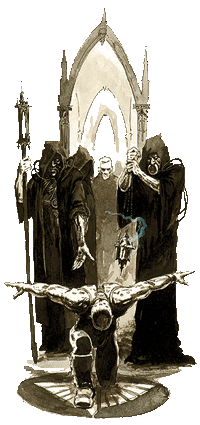

|
|
 |
| |
Hírek
Itt megtudhatod milyen frissítések történtek
az utóbbi idõben.
|
Új
cikkek és éves karbantartás - 2007.
július 18. -
Rincewind |
|
Nem
kevesebb, mint két teljes évnyi kihagyás
után, ma újra életre kel az oldal. Sajnos
azt nem tudom megígérni, hogy ezentúl majd
rendszeresen frissítem, de azt
mindenképpen leszögezhetem, hogy az oldal
leállítása soha meg sem fordult a
fejemben. Ezentúl, ha idõm és a
körülmények engedik, újabb frissítésekkel
igyekszem majd jelentkezni. Azt viszont,
hogy milyen idõközönként, értelemszerûen,
nem tudom megmondani.
Legelõször
is hagy emeljem ki, hogy nagyjából
átmentem az egész oldalon, és ahol hibát
észleletem azt kijavítottam. A halott
linkek javítva lettek, új képek lettek
feltöltve, néhány cikk alapos
ráncfelvarráson esett át, és sok esetben
még bizonyos oldalak kinézetén is
változtattam a jobb összhatás kedvéért.
Mindezek
mellett természetesen újabb cikkek is
kerültek fel az oldalra. Legelsõsorban a
Beavatási Rítusok címû 40k irományt
emelném ki, amely részletesen bemutatja az
ûrgárdisták születését és minden egyes, a
testükbe beültetett, implantációt. Régi
kérés volt ez a cikk, és hamarosan
folytatása is következik. Ezen felül két
Fantasy Roleplay cikket fordítottam még
le, egyik az elhagyatott törpe erõsséget,
Karak Azgal-t, mutatja be, a másik pedig a
Necrarch vámpírokkal foglalkozik. Mindkét
|
 |
|
|
WFRP cikk
az új, második kiadású, kiadványokból lett
fordítva.
Észrevételeket,
kritikát és javaslatokat a fórumba várok. Jó
olvasgatást! |
|
Warhammer
40k frissítés! - 2005.
augusztus 13. - Rincewind |
| A kissé hosszúra nyúlt szünet
után most megújult erõvel jelentkezik
újra az oldal. Mivel ez idõ alatt a legtöbb
kérés Warhammer 40.000 témá- ban érkezett
hozzám, és a teljesen megújult
Warhammer szerepjáték is csak az
ismerkedés stádiumában leledzik egyelõre,
ezért a 40.000 szekcióra összpontosítottam
minden energiámat és három új írást raktam fel. Elsõként egy új cikkben
mutatom be a Necromundán található
Primus bolyváros uralkodó házait. Ez akár
a korábbi Necromundás cikk folytatásának
is felfogható. Ezután az emberiség
birodalma következik egy rövid leírás
erejéig, amely egy cikksorozat elsõ része,
melyet a jövõben újabb részekkel
szeretnék bõvíteni. Végezetül pedig
felraktam még egy átfogó bemutatót a
40. évezred kézifegyvereirõl, ami közel
sem mondható teljesnek, így ezt a jövõben
még mindenképpen folytatni szeretném.
|
 |
Mindezek mellett természetesen átesett az
oldal egy alapos nagytakarításon is. Az
eltelt egy évben sok link megszûnt vagy
megváltozott, ezeket kijavítottam. Frissítettem
a galériákat, néha belejavítottam
cikkekbe, ha tartalmukat elavultnak találtam,
és új letöltés is található a régiek
közt. Mindenkinek kellemes olvasgatást kívánok
és várom az észrevételeket a fórumon
vagy e-mailben. |
|
Ideiglenes leállás - 2004.
augusztus 21. - Rincewind |
| Egy kétesélyes hírrel kell
kezdenem a mai napot. De elõtte azt
hiszem illik ismertetnem az elõzményeket.
Történt ugyanis, hogy hosszabb idõre el
kell utaznom külföldre (egészen
pontosan egy évre), és jelenleg sajnos
nem ismerem a kinti lehetõségeimet. És,
hogy ez miért kétesélyes? Nos azért
mert a legrosszabb esetben kénytelen
leszek egy esztendeig szüneteltetni az
oldal frissítését. Bár ettõl még
senki ne menjen fejjel a falnak (esetleg járjon
örömtáncot :), mert a legjobb esetben
viszont az ég adta világon semmi nem változik,
és hamarosan jelentkezem egy újabb adag
irománnyal. :) A dolog tehát jelenleg
valóban kétesélyes,
amire a választ egyelõre nem tudom. De
annyit megígérhetek, ha bekövetkezne a
legrosszabb, akkor egy év múlva, extra
nagy méretû frissítés özönt zúdítok
rátok, mert az ugye mondanom sem kell,
eszem ágában sincs abbahagyni az oldal készítését!
:)
Ami
viszont biztos: az elérhetõségeim megváltoznak,
ám ezekrõl jelenleg még én sem tudok többet
mondani. E-mailt tehát ne küldjön
senki! Ha már valami biztosat tudok
mondani, akkor
mindenképpen jelezni fogom a fórumon,
tehát azt mindenképpen érdemes néha látogatni.
Valamint, ha valamit közölni akartok,
azt is ott tehetitek meg. Addig
is szeretnék elköszönni, de nagyon remélem,
hogy hamarosan, legrosszabb esetben pedig
egy év múlva újra találkozunk!
- Rince
Because of an
unexpected journey, I won't be able to
update this website, and I won't be
available. Expected restart: summer, 2005.
In case the site starts sooner, I was able
to find some way to refresh it. If you have
some extremely important issue to discuss,
then please post it in the forum.
|
|
Warhammer
40k bõvítés! - 2004.
augusztus 14. - Rincewind |
| Elõzõ ígéretemhez híven, a
mai nappal életbe lépõ frissítések,
legnagyobbrészt a Warhammer 40.000 szekciót
érintik. Három teljesen új fordítást
tettem fel, melybõl kettõ szorosan
kapcso- lódik a már korábban leközölt
Sötét Angyalok történetét bemutató
cikkhez (Mesék az Angya- lokról
és Az Oroszlán és a Farkas). Egy
pedig teljesen új vizekre evez és a
Necromunda világán fellelhetõ bolyvárosokkal
foglalkozik behatóbban (Necromunda
bolyvárosai). Aki szereti Watson regényeit,
annak bizonyára ismerõsen cseng a
fenti név. Jó szórakozást kívánok
hozzájuk!
Ám azoknak sem kell
elkeseredniük, akik valami újdonságra vártak
a már régóta nem frissülõ modellezési
rovatban. Nekik két cikkel igyekszem
kedveskedni, amiket kimondottan egy-egy
faj kifestésének szenteltem.
Nevezetesen az Ûrgárdistáknak és
a Skaveneknek. Remélem hasznosnak
bizonyulnak majd!

|
|
Nonhumán
invázió! - 2004. június
30. - Rincewind |
| Elég
hosszú kihagyás után, ma egy méretesebb
csomag kúszott fel a szerverre,
teljes egészében a Warhammer
szerepjátéknak szentelve és
ezen belül is a nem emberi
fajoknak. Nem is húznám
feleslegesen az idõt, mindenféle
magyarázatokkal, hogy miért késett
ennyit a frissítés, hanem nézzük
rögtön, hogy milyen újdonságokat
találhattok az oldalon: |
 |
Elõször is négy új cikket
raktam fel a Roleplay szekcióba! Az elsõ,
a legterjedelmesebb mind közül,
tartalmazza egy, a szabálykönyvben nem
szereplõ "új" faj, a gnóm
teljes leírását. A cikkben található
információk alapján bárki
kidolgozhatja saját gnóm karakterét,
ami kellemes színt vihet az Óvilágon
kalandozó csapatok életébe. A következõ
kettõ egy egy új, elit szakma bemutatása,
mindkettõ faj specifikus, ezek sorban: a törpe
tanmesterek és az elf bestabarátok.
A negyedik cikk pedig egy új istenség
bemutatása: Karnos a bestiák ura.
Ez voltaképpen a bestiabarátos cikk
szerves része, pusztán praktikussági
okokból bontottam szét õket.
Ezeken túl még három új letöltéssel
is szolgálhatok, három úgynevezett
internet sourcebook-al, amik ugyan nem
hivatalosak, de semmivel sem maradnak el
azok színvonalától. Ebbõl kettõ egy-
egy faj alapkönyve (Book of the Rat
és Da Book of Goblins), egy pedig
az óvilági bûnszö- vetkezetekkel
foglalkozik (Shadowy Dealing Sourcebook).
A letöltéseket Kornya Zsoltnak (Raoul
Renier) köszönjétek. Figyelem ezek
angol nyelvûek!
Engedve a nyomásnak a következõ
frissítés, újfent a 40.000 témában várható,
mert rengetegen kértétek! :)
|
|
Elindult
a Warhammer 40.000 szekció!
- 2004. április 07. - Rincewind |
| Nagyon sokat kellett erre a
pillanatra várni, de most büszkén
jelentem be, hogy a Warhammer 40.000 részleg
megnyitotta kapuit!
A hosszú késedelem fõleg a fordítás döcögõssége
miatt következett be, ezért utólag is elnézést
kérek! Kezdetben két hosszabb
lélegzetû cikkel jelentke- zem: az elsõ, a
Sötét Angyalok rendházának története,
mely elbeszéli a rend
minden sötét titkát! A második pedig a Tyranida kaptárflotta
története.
A jövõben szintén hasonló történetekkel
és novellákkal szeretném majd gazdagítani
a 40.000 szekciót. Azonban magukkal a kapcsolódó
játékokkal nem kívánok foglalkozni (erre
vannak sokkal jobb és naprakészebb
oldalak), tehát senki ne várjon szabályokat
és kiegészítéseket. Én inkább magára
a Warhammer 40.000 univerzumra szeretnék
koncentrálni.
|
|
Év végi
nagyobb frissítés - 2003.
december 29. - Rincewind |
| Pár napi megfeszített munka után,
ma lecseréltem az egész oldal struktúráját, így most érte
el a végleges formát! Ebbõl ti ugyan nem
sokat fogtok érzékelni, mert látszatra
minden maradt a régiben, de most már például
minden oldalon egységes menürendszer található
és minden link mûködik (elvileg). Néhány
kép is le- illetve ki lett cserélve, hogy
egységesebb legyen az oldal arculata.
Ezen felül még rengeteg apróbb frissítés történt
az oldalon! Többek közt felkerül 6 új
kép a fantasy- és 8 új a 40.000 galériába.
Van pár új link, letöltés és néhány modell galéria is gazdago- dott
pár képpel.
Valamint hagy emeljem ki külön a
letöltések közt szereplõ új Mordheim
jelzõket. Ezeket azért csináltam, hogy könnyebbé
tegyék a Mordheim összecsapásokat és kíméljék
a festett figurákat a szabálykönyvben
javasolt döntögetéstõl. Nagyon remélem,
hogy eredményesen lehet majd õket használni!
|
|
Néhány
apróbb frissítés - 2003.
szeptember 27. - Rincewind |
Ma végrehajtottam néhány
kisebb frissítést, amik több szekciót
is érintenek. Nézzük akkor mik is ezek
pontosan:
- Kibõvítettem a galériát. Hat
új képet raktam fel a Fantasy Galériába
és egyet a 40.000-be. Ezek mind egy mûvész:
Adrian Smith munkái.
- Kiraktam a linkek közé a fent
említett mûvész hivatalos weboldalát.
Érdemes rajta szétnézni, mert rengeteg
gyönyörû kép van fent.
- Valamint két tétellel bõvítettem
a Letöltés szekciót. Az egyik egy
Kornya Zsolt gondozásában megjelent,
angol nyelvû Warhammer Fantasy Roleplay
kalandmodul gyûjtemény. A másik pedig
egy zászlógyûjtemény a 40.000-es Dark
Angels ûrgárdista rendházhoz. A zászlók
méretarányo- sak és CMYK-ban vannak
felrakva, tehát aki letölti nincs más
dolga, csak kinyomtatni. |
|
Warhammer
FRP bemutató - 2003.
augusztus 26. - Rincewind |
| Egy nagyon fontos cikk került ma
fel a Roleplay szekcióba, egy olyan írás,
amely mélységeiben próbálja meg
bemutatni a Warhammer szerepjátékot.
Anno, mikor az új oldal indult, ez lett
volna a szerepjátékos szekció nyitó írása,
ám akkoriban ezt sajnos nem tudtam leközölni.
Mostanra azonban adottak lettek a feltételek,
hogy ezt az elmaradást pótoljam. A cikk
elolvasását minden- kinek melegen ajánlom,
szerintem igazi mestermû. |
|
Gerhard
Gauner kalandjai - 2003.
augusztus 16. - Rincewind |
| A mai napon egy igen impozáns
irománnyal bõvült a Warhammer Fantasy
Roleplay szekció. Név szerint Gerhard
Gauner kalandjaival, mely cikk megkísérli
részletesen bemutatni a Warhammer szerepjáték
fejlõdésrendszerét. Nagyon kellemes
iromány, elolvasását mindenkinek ajánlom
attól függetlenül, hogy játszik-e a
szerepjátékkal vagy sem.
És végül köszönet Kornya
Zsoltnak (Raoul Renier), amiért hozzájárult
a cikkei közzétételéhez. A jövõben több
írást is láthattok majd tõle Warhammer
témában!
|
|
Warhammer
40.000 kezdetek - 2003.
augusztus 08. - Rincewind |
| A mai nappal kísérleti
jelleggel felkerült a galériába egy 40.000
szekció! Fõleg a design-al
kapcsolatban várnék véleményeket,
javaslatokat a fórumba, e-mailben vagy bármilyen
módon. Ha elnyeri a többség tetszését,
akkor olyan külsõvel, hamarosan egy vadi
új 40.000 részleggel jelentkezik az
oldal! :) |
|
Útmutató
a modellek talpainak díszítéséhez! - 2003.
április 04. - Stark |
| Régi igényeket elégít most ki
az oldal! Kikerült ugyanis a modellezési
rovatba egy nagyobb lélegzetvételû
cikk, mely a figurák talpainak szép és
igényes elkészítésérõl próbál meg
néhány gondolatot megosztani veletek! |
|
Start! :)
- 2003. január 20. - Rincewind |
| Több, mint két havi kihagyás
után immáron megújult külsõvel,
tartalommal és helyrõl jelentkezik az
oldal, remélhetõleg mindenki legnagyobb
megelégedésére! De nézzük bõvebben
mik a legfon- tosabb változások:
A design-ról nem érdemes túl
sokat beszélni (talán csak annyit, hogy I.E.
6 használata erõsen javallott!),
mindenki döntse el, tetszik-e neki vagy
sem. :) A tartalomról viszont annál inkább!
A régi oldallal ellentétben itt mindössze
hét témakör fedi le az oldal által nyújtott
lehetõségeket. Szinte minden nagyobb témakörben
vannak új írások, valamint a régiek is
jelentõs ráncfelvarráson estek át
(helyesírási és fogalmazási probléma
talán már kevesebb található bennük).
Teljesen új jelenség a Roleplay
szekció, mely kizárólag a Warhammer
szerepjátékkal foglalkozik. Mivel már így is majd másfél hónapot csúszott a
megjelenés, néhány írás csak késõbbi
frissítés formájában lesz majd elérhetõ.
Ez fõleg Roleplay és kisrészt a
Modellezési rovatot érinti.
Végül pedig a köszönet nyilvánítás: köszönöm
a Box Bt-nek, amiért lehetõvé
tették a cikkeik újraközlését, a Hardwired-nek
a tárhelyet és az Rpg.hu-nak a több
évnyi támogatást!
|
|
|
|
|
|
|